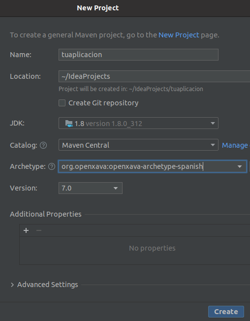

OpenXava está basado en Maven por
lo que funciona muy bien con IntelliJ.
Crea un nuevo proyecto Maven con IntelliJ, escogiendo
org.openxava:openxava-archetype-spanish
como arquetipo:

Fíjate que escogemos Maven Central como repositorio.
Antes de ejecutar tu proyecto has de hacer un
mvn package en él.
Después busca la clase
tuaplicacion.java (es el nombre de tu
aplicación) dentro del paquete
org.example.tuaplicacion.run en
src/main/java,
y ejecutala.